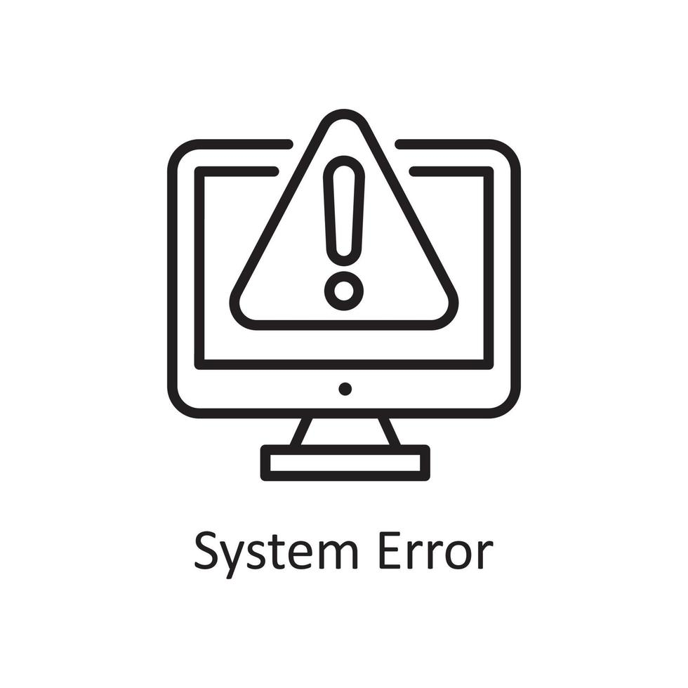
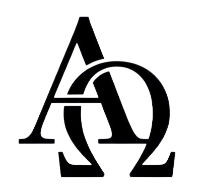
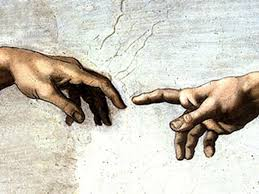

Mussum Ipsum, cacilds vidis litro abertis. A ordem dos tratores não altera o pão duris. Aenean aliquam molestie leo, vitae iaculis nisl. Mais vale um bebadis conhecidiss, que um alcoolatra anonimis. Nec orci ornare consequat. Praesent lacinia ultrices consectetur. Sed non ipsum felis.
Cevadis im ampola pa arma uma pindureta. A ordem dos tratores não altera o pão duris. Interagi no mé, cursus quis, vehicula ac nisi. Casamentiss faiz malandris se pirulitá.
| Tema | Descrição | Visualização |
|---|---|---|
| Apostila de programação para web: HTML e CSS | Esta apostila tem como objetivo auxiliar os estudantes de escolas técnicas e nível superior, na aprendizagem de criação de websites utilizando as linguagens HTML e CSS. Esta apostila não substitui os livros, sua finalidade é criar um roteiro resumido do ensino aprendizagem realizado em sala de aula. |  |
| Apostila de Cristologia | A DOUTRINA DA PESSOA E OBRA DE CRISTO A PESSOA DE CRISTO |  |
| St Andrews Encyclopaedia of Theology - Theology and Technology | A tecnologia é uma realidade multifacetada. Não são apenas as ferramentas e máquinas que usamos, mas também as habilidades e processos com os quais os usamos e as atitudes, cultura e estruturas que produzem ou melhoram. Dado que o propósito da tecnologia é transformar nosso ambiente ou nós mesmos, a tecnologia levanta questões de identidade humana, nosso relacionamento à natureza, ao nosso relacionamento uns com os outros e aos nossos ideais e esperanças para o futuro. Nós veja essas questões especialmente nas atuais ferramentas transformadoras da engenharia genética, nanotecnologia, inteligência artificial e robótica e tecnologias energéticas. Cada um essas tecnologias levantam novas decisões e dilemas éticos, bem como questões central para a teologia cristã, como a natureza da imago Dei, o pecado, a salvação e o escaton. |  |